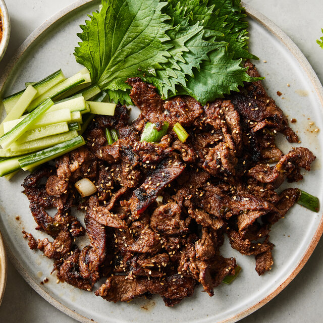

Thông Tin Tour
Giá: 45,000,000 VND
Ngày đi: 25/03/2025
Phương tiện: Máy bay lượt đi + khứ hồi và xe du lịch tại Nhật Bản.
Thời gian: 6 ngày 5 đêm
Giới thiệu: Tour tham quan Tokyo, Kyoto, núi Phú Sĩ và Osaka cùng với những văn hóa ẩm thực đặc sắc của từng vùng xứ sở Hoa Anh Đào.
Lịch Trình Tour
- Ngày 1: Tham quan thủ đô Seoul, ghé thăm cung điện Gyeongbokgung và làng cổ Bukchon Hanok.
- Ngày 2: Dạo chơi tại Everland, công viên giải trí lớn nhất Nhật Bản với nhiều trò chơi và vườn hoa bốn mùa. Tham quan tháp Namsan Seoul Tower, nơi lý tưởng để ngắm toàn cảnh thành phố.
- Ngày 3: Đi thuyền trên sông Hàn, thưởng thức không khí lãng mạn tại đảo Nami, địa điểm quay phim nổi tiếng "Bản Tình Ca Mùa Đông".
- Ngày 4 - 6: Tham gia lớp học làm kim chi, khám phá chợ Myeongdong và thưởng thức các món ăn đường phố.
Điểm Tham Quan Nổi Bật
-
 Cung điện Gyeongbokgung
Cung điện Gyeongbokgung
- Làng cổ Bukchon Hanok
-
 Tháp Namsan Seoul Tower
Tháp Namsan Seoul Tower
- Đảo Nami
-
 Chợ Myeongdong
Chợ Myeongdong
Ẩm Thực Đặc Sắc
Tour sẽ giới thiệu đến du khách các món ăn nổi tiếng của Hàn Quốc:
- Kimchi: Món ăn truyền thống không thể thiếu trong mỗi bữa cơm của người Hàn.
-  Bulgogi: Thịt bò nướng sốt đậu tương ngọt ngào.
- Tteokbokki: Bánh gạo cay xốt ớt đặc trưng.
Phương Tiện Di Chuyển
- Máy bay lượt đi + khứ hồi, xe du lịch tại Hàn Quốc.